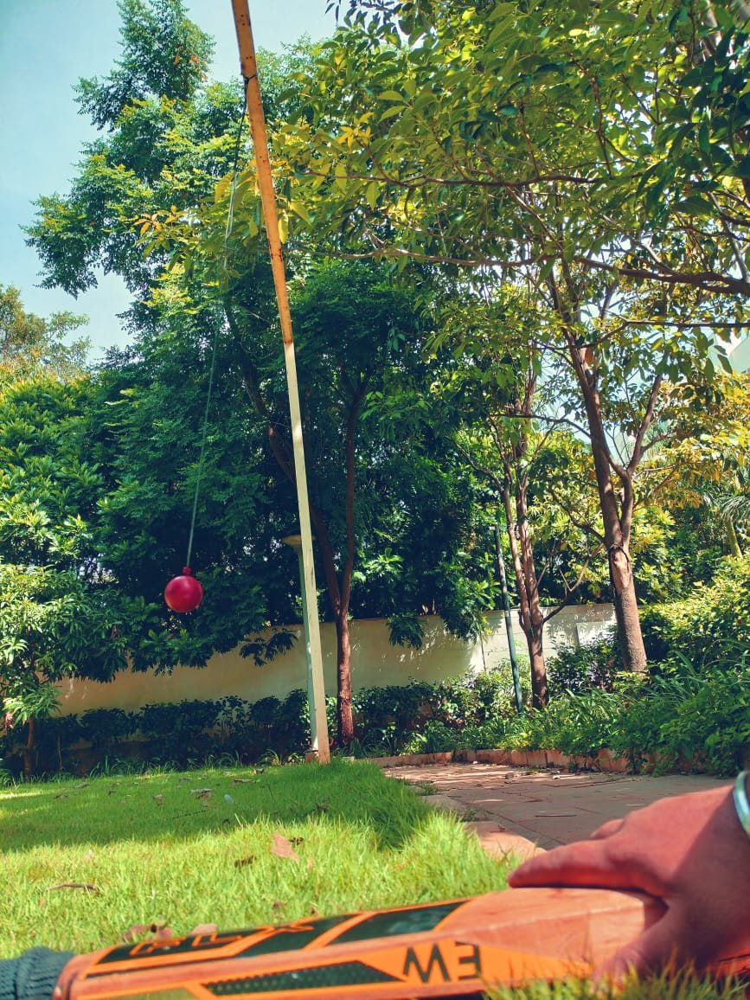
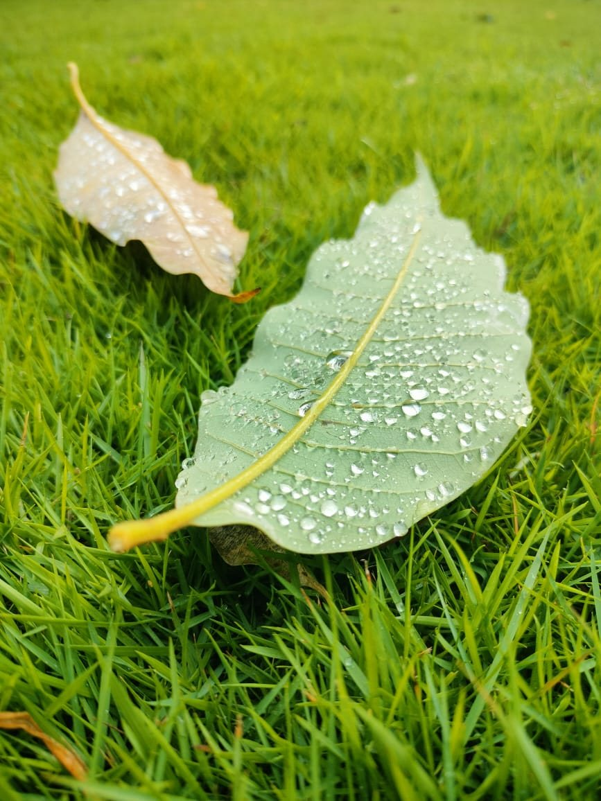
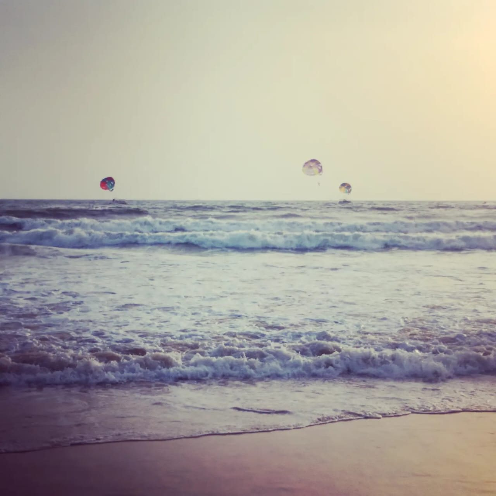
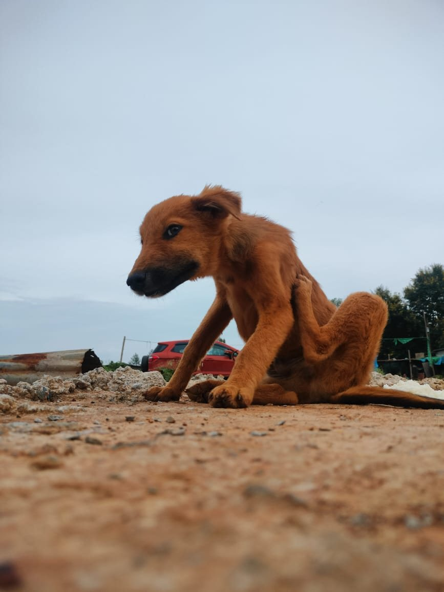
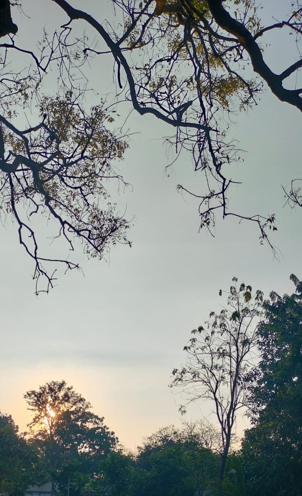
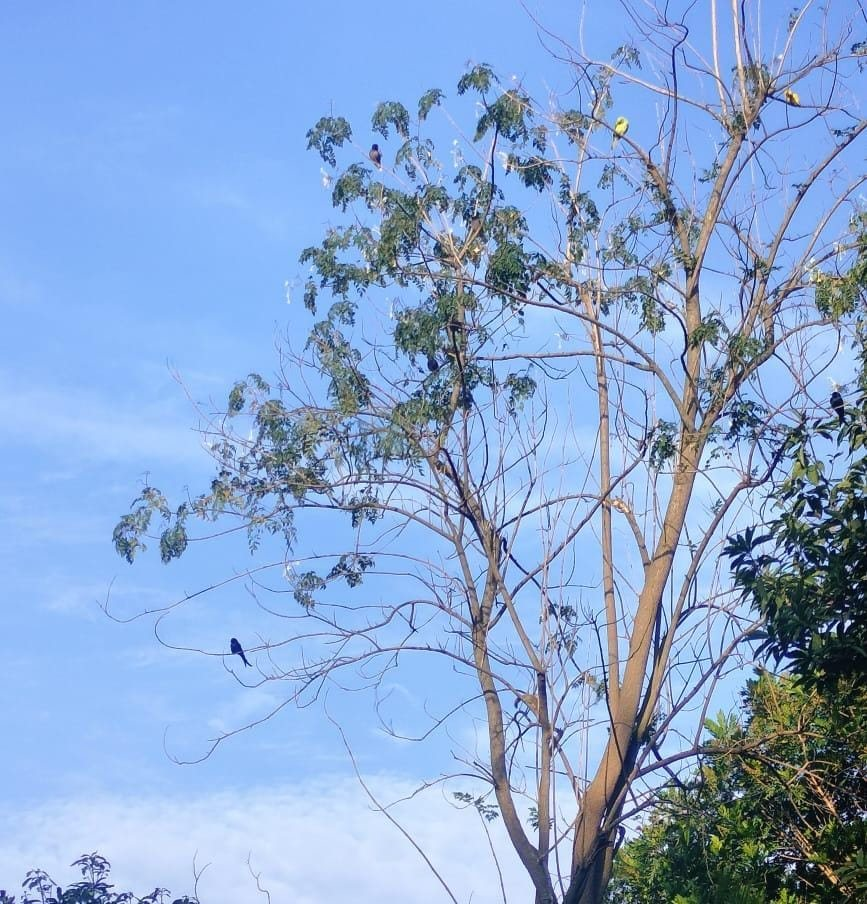

Leadership
Head Boy, Grade X
Trio World School, Bengaluru
Elected with 40%+ of the vote in a school-wide election of 500+ voters. Co-led a 24-member council and supported events including MUN, inter-school competitions and assemblies.
economics · strategy · global affairs · a little astrophysics
I'm Krrishnav Sharma, a student of Economics at the University of Delhi and Digital Business & Entrepreneurship at IIM Bangalore. I like hard questions, good data, and the occasional detour that turns out to be the point.
01 · about
I'm most interested in the places where economics, strategy and world affairs overlap: where a GDP figure turns out to be a story about people, and a treaty turns out to be a spreadsheet in disguise.
My method is simple: ask the slightly inconvenient question, then go looking for the data. It has taken me from comparing five countries across 15+ indicators to running a food pop-up in my society, with a menu, a price list and a very real customer column. Economics, it turns out, is best tested in the wild.
Ambitious by design means I plan, prepare and show up. Curious by nature means the plan occasionally gets derailed by a better question. I've made peace with both.
02 · journey
B.A. (Hons.) Economics
Bachelor of Business Administration in Digital Business & Entrepreneurship
CBSE Class XII · 85.2%
Marketing & Data Analytics Intern
Leadership
Trio World School, Bengaluru
Elected with 40%+ of the vote in a school-wide election of 500+ voters. Co-led a 24-member council and supported events including MUN, inter-school competitions and assemblies.
1st place · of 20 models
Nagarjuna Vidyaniketan
Designed a sustainability-focused piezoelectric energy-generation model for high-footfall public spaces, linking core economic concepts to the UN Sustainable Development Goals. Four-member team across research, design and final presentation.
2nd place · of 12 teams
Nagarjuna Vidyaniketan
Analysed three business cases on strategy and communication, then built structured recommendations and defended them in front of a judging panel.
03 · research & inquiry
I'm curious across subjects, from economics and history to geopolitics, and when something grabs me I like to go deep, not just wide. These are three of them.
Hover or tap a card to turn it over.
Development economics
India · Switzerland · China · Tanzania · Venezuela
turn over ↻A comparative study of why countries live so differently, assessed across 15+ indicators: GDP growth, GDP per capita, HDI, Gini coefficient, literacy, clean water, pollution, trade, transportation and civil liberties.
Data was cross-referenced from the World Bank, UN, WHO, UNDP and NGO reports, with a close eye on how reliable and comparable each dataset really is.
Ask me about it →Class 12 · independent project
Players · incentives · moves · counter-moves
turn over ↻A project that used game-theoretic thinking to analyse a geopolitical situation: who the players are, what each one wants, and how every move changes the board for everyone else.
It's where my interest in international affairs and my love of structured reasoning first met, and they have been seeing each other since.
Ask me about it →History & people
Childhood · legacy · Mongolia today
turn over ↻A study that deliberately looked past the wars, to his childhood and the forces that shaped him, and to what he means to the people of Mongolia now.
The takeaway: the most famous figures in history are rarely just their most famous chapter.
Ask me about it →04 · the pop-up
I ran it more than once, because my neighbours kept asking when the next one was.
Before I studied markets, I had a small one of my own. I wrote the menu, set the prices, picked the timings and told my neighbours to show up hungry. The first round got good reviews, and people kept asking when I'd do it again. Demand was clearly telling me something, so I raised the price for the next round. It taught me more about pricing, demand and listening to customers than any chapter could have.
Tap a flyer to see it full size.
05 · interests
A massive fan, and a Virat Kohli loyalist. Few things teach intensity, preparation and handling pressure better than watching him chase a target.
Part creative outlet, part controlled experiment. The best feedback loop I know: someone eats it, and they tell you honestly.
The world as a chessboard where every piece also gets a vote, and sometimes a veto. I read it for the incentives, not just the headlines.
I once planned to study astrophysics. I now just look up more than is strictly economically rational, and I'm at peace with the opportunity cost.
06 · frames
Not a professional, just paying attention. Tap any photo to enlarge.






07 · my ethos
I believe in keeping my head down, staying humble and working hard for my goals.
Bhagavad Gita · Chapter 2, Verse 47
कर्मण्येवाधिकारस्ते मा फलेषु कदाचन।
मा कर्मफलहेतुर्भूर्मा ते सङ्गोऽस्त्वकर्मणि॥You have a right to your actions, but never to their fruits. Let the reward not be your motive, and do not let that make you idle.
08 · contact